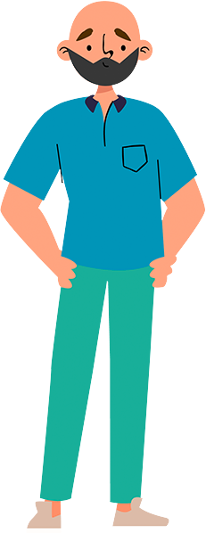
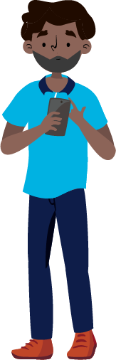
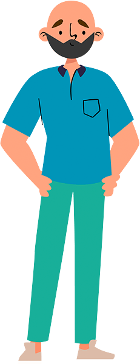
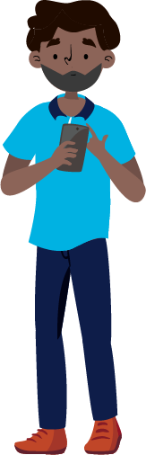

¡Bienvenido a la Metodología de intervención basada en modelos de desarrollo comunitario para proyectos viales! Antes de iniciar, déjame contarte cómo nace esta iniciativa…
Durante el año 2022, la Agencia Nacional de Seguridad Vial se propuso construir una Metodología de intervención comunitaria para fortalecer comportamientos viales.
Reproducir Audio
¡Hola! Mi nombre es Manuel. Soy conductor de una ruta escolar que transita por esta zona. Aprovechando este encuentro, quiero contarte sobre la metodología que hemos venido implementando con otros actores viales, multisectoriales y comunitarios, para garantizar el cuidado de la vida en la vía
Reproducir Audio
¡Hola! Mi nombre es Javier. Soy docente. Al igual que Don Manuel y Juanita, he apoyado la conformación e implementación de los Comités Comunitarios y Multisectoriales para fortalecer una cultura vial
Reproducir Audio